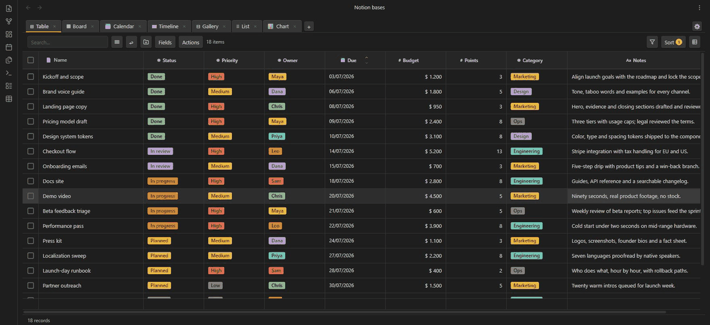
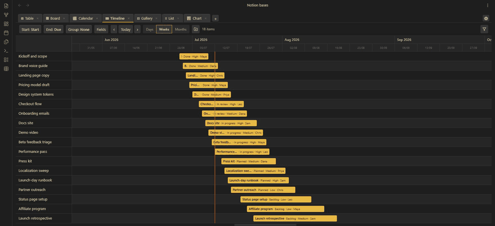
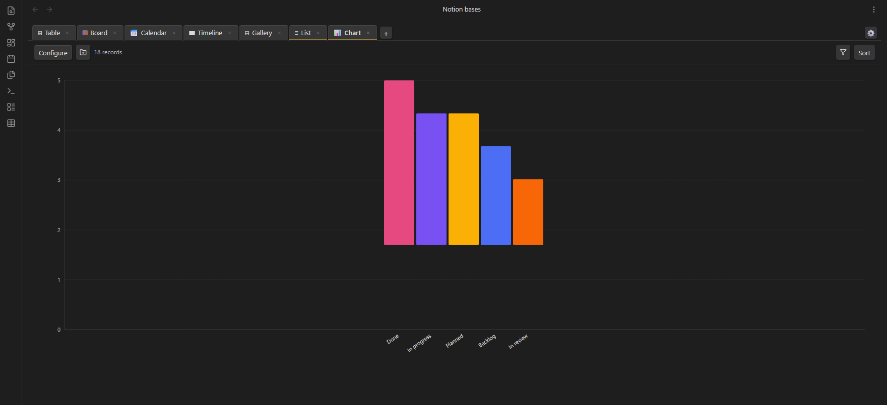

The database plugin Obsidian is missing.
Turn any folder of notes into a table, kanban board, gallery, calendar, timeline or chart, with relations, rollups and spreadsheet formulas. Every row stays a plain Markdown file in your vault.
The install button opens Obsidian for you. No Obsidian on this device? Search “Notion Bases” in Settings → Community plugins instead.
Free & open source · GPL-3.0
Desktop and mobile
No cloud, no telemetry. Your data stays yours

Outgrown the built-in Bases?
Obsidian ships with Core Bases, its built-in database feature. It's a solid table. Notion Bases starts where it stops:
Despite the name, this project isn't affiliated with Notion: it borrows the one thing Notion got famously right, and keeps your data in Markdown.
See the full comparison (29 rows)
| Feature | Notion Bases | Core Bases |
|---|---|---|
| Table view | ✓ | ✓ |
| Board / Kanban view | ✓ | — |
| Gallery view | ✓ | — |
| List view | ✓ | ✓ |
| Calendar view | ✓ | — |
| Timeline / Gantt view | ✓ | — |
| Chart view (bar, line, pie) | ✓ | — |
| Column types | 18 | 7 |
| Formulas | Spreadsheet-style | Expression-based |
| Relation columns | ✓ | — |
| Lookup columns | ✓ | — |
| Rollup columns | ✓ | — |
| Subtasks / sub-rows | ✓ | — |
| Image columns (rendered) | ✓ | Text only |
| Audio / video columns | ✓ | — |
| Calendar time slots | ✓ | — |
| Mobile-optimized views | ✓ | — |
| Aggregation row | ✓ | — |
| Number formatting | ✓ | — |
| Column pinning | ✓ | — |
| Column reordering (drag) | ✓ | ✓ |
| Column resizing (drag) | ✓ | ✓ |
| Row height options | ✓ | ✓ |
| Text wrap toggle | ✓ | — |
| CSV import / export | ✓ | — |
| Bulk actions | ✓ | — |
| Embed database in any note | ✓ | ✓ |
| Multiple views per database | ✓ | ✓ |
| AND/OR filter logic | ✓ | ✓ |
Seven ways to see the same folder.
Each view is a lens over the same Markdown files, each with its own filters, sorts and visible fields. Change a cell anywhere, and the frontmatter changes everywhere.
Table
A real spreadsheet feel: inline editing, pinned columns, multi-column sort, bulk actions and a live aggregation footer.

Board
Group by any select or status field and drag cards between columns. Add cards in place, and set a card limit per column when work-in-progress needs a ceiling.

Timeline
A Gantt over your frontmatter, with three zoom levels: days, weeks, months.

Calendar
Notes on a month grid, positioned by any date field. Click a day to create a note with the date pre-filled.

Chart
Bar, line and pie, aggregated from any column: count, sum, average, min or max. Pure SVG, zero dependencies.

Gallery
A responsive card grid with cover images, built for visual collections, recipes and references.

List
One line per note, with property chips. The fast lane for task runs and quick overviews.

Databases that talk to each other.
Link a Tasks database to a Projects database with a relation column. Pull each project's deadline into its tasks with a lookup. Sum every task's points back onto the project with a rollup: sum, count, average, min, max, or a joined list.
It's the trick that made Notion databases feel alive, and here it runs on plain frontmatter, in files you can open with any text editor, forever.
Then go further: spreadsheet formulas (IF, SUM, CONCAT, ROUND…) compute columns from other columns, in a syntax you already know from Excel.
--- project: "[[Apollo]]" deadline: 2026-08-01 points: 5 --- # relation, lookup, rollup: # Apollo sums the points of its tasks
And the rest of the toolbox.
- 18 column types: from text and dates to status, media and formulas
- Live placeholders:
{{column}}in a note body renders the cell's value - Auto-arrange: file rows into subfolders by property values, with preview
- Filters: type-aware operators with AND/OR groups
- Multi-column sort: with drag-to-reorder priority
- Aggregation footer: sum, average, min, max, count, always live
- Number formatting: prefixes, suffixes, decimals, thousands separators
- CSV: import and export
- Bulk actions: select rows to delete, duplicate or move
- Media columns: images, audio and video rendered in-cell
- Schema inference: column types detected from your existing frontmatter
- Embeds: drop any view into any note with a code block
- 7 languages: English, Português, Español, Français, Deutsch, 中文, 日本語
- 100% local: no cloud, no account, no telemetry
Installed in under a minute.
- Open Settings → Community plugins → Browse
- Search for “Notion Bases”
- Install, then Enable (or skip all three with the one-click install link, which opens Obsidian for you)
Prefer to install manually?
- Download
main.js,manifest.jsonandstyles.cssfrom the latest release - Create
<vault>/.obsidian/plugins/notion-bases/and copy the three files in - Reload Obsidian and enable the plugin in Settings → Community plugins
Requires Obsidian 1.8.7 or later · desktop and mobile.